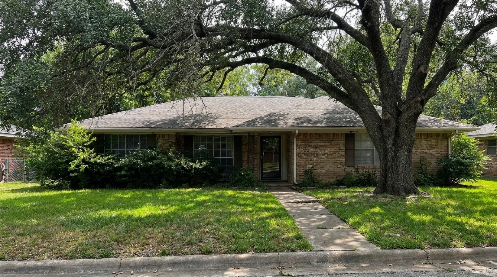
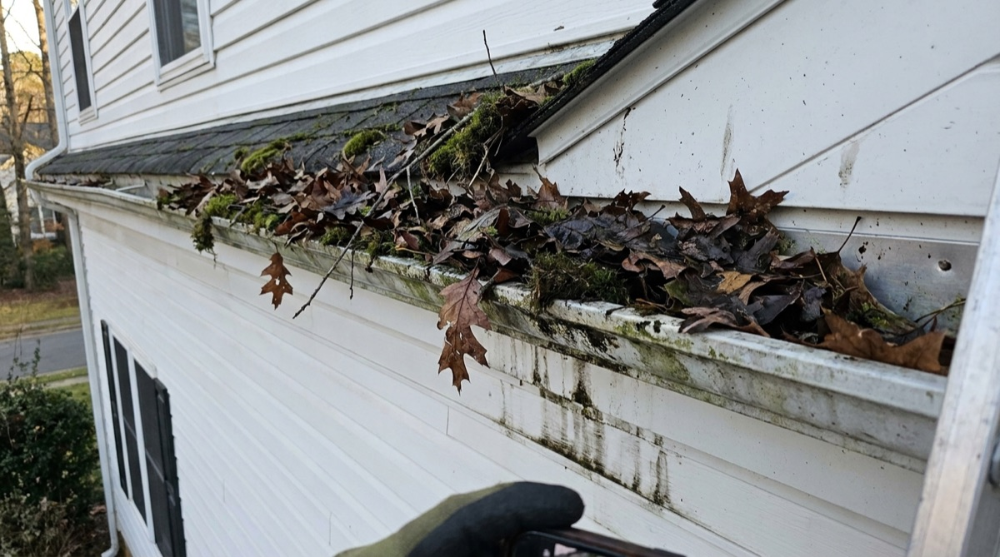
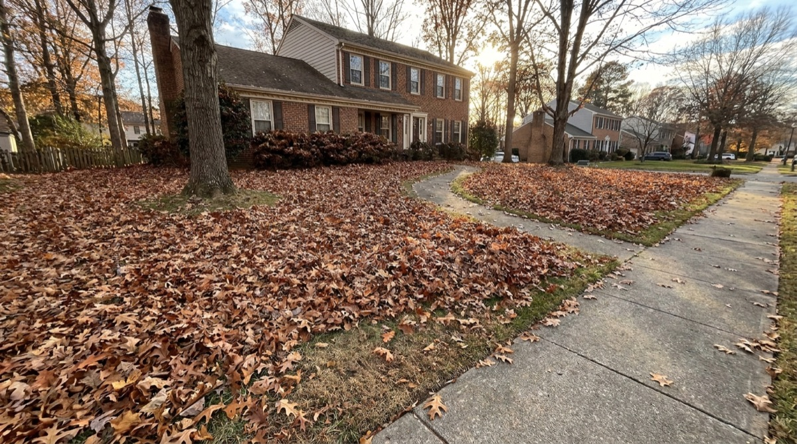

Pricing
Pricing
How Much Does Landscaping Cost in Fredericksburg, VA? (2026 Guide)
Wondering what landscaping costs in the 540 area? We break down real prices for every service.
Read MoreSeasonal guides, pricing breakdowns, and local lawn care advice for homeowners in Stafford, Fredericksburg and Spotsylvania.
Pricing
Wondering what landscaping costs in the 540 area? We break down real prices for every service.
Read More Lawn Care
Lawn Care
Not all grass is created equal. Here's exactly which grass varieties thrive in Virginia's climate.
Read More Seasonal
Seasonal
March through May is make-or-break for your yard. Here's the full spring checklist Virginia pros follow.
Read More Mulching
Mulching
Mulching at the wrong time can hurt your plants. Here's the Virginia mulching calendar you need.
Read More Services
Services
From driveways to siding, what power washing costs in the 540 area and how often you need it.
Read More Gutters
Gutters
Skipping gutter cleaning in Virginia's tree-heavy 540 area can cost you thousands. Here's the schedule.
Read More Summer
Summer
Virginia summers are brutal on grass. Here's exactly how to protect your lawn from July heat stress.
Read More
Fall Care
Should you remove leaves or mulch them into the ground? The answer depends on your yard.
Read More Seasonal
Seasonal
A solid winter prep routine protects your lawn, trees, and garden beds through Virginia's coldest months.
Read More Tree Service
Tree Service
Tree removal costs in the 540 area vary by size, location, and condition. Here's the full pricing breakdown.
Read More
Tree ServiceDead branches, roof contact, lopsided canopy. Know when to call a pro before the damage gets worse.
Read More Mulching
Mulching
Hardwood, pine bark, pine straw, rubber, stone. Which mulch works best for Virginia's clay soil?
Read More
GuttersTwice a year minimum, but many 540 area homes need three or four cleanings. Here's how to tell.
Read More
Junk Removal
Yard debris, old furniture, construction waste. What gets hauled, what it costs, and when to call a pro.
Read More
Storm Cleanup
Fallen trees, broken limbs, scattered debris. Safety steps, insurance tips, and when to call for help.
Read More
SeasonalLeaf removal, last mow, mulch refresh, gutter cleaning. The complete fall checklist for the 540 area.
Read More
Buyer Guide
What to look for, questions to ask, and red flags to avoid when hiring a landscaper in the 540 area.
Read More Lawn Care
Lawn Care
Virginia's clay soil compacts fast. Here's when, why, and how to aerate for a healthier lawn.
Read More